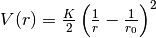
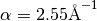
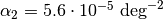
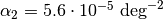
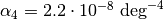
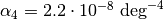

QuickFF Settings¶
The configuration parameters for the construction of the force field are stored in an instance of the Settings class. These configuration settings include:
- Configuration of the logger
- File names for input (eg. the Yaff parameter file for the electrostatic contribution) and output (eg. the Yaff parameter file for the covalent force field, system file, trajectory file, …)
- Settings for the non-bonding contributions (eg. cutoff)
- Settings specifying the energy expression of the covalent force field (do_bonds, do_bends, do_dihedrals, do_oopdists, bond_term, bend_term, do_squarebend, …)
- Settings to finetune the fitting algorithms (do_hess_mass_weighting, cross_svd_rcond, …)
These settings can be specified by either of the following means:
- the system-wide default settings defined in the config file
quickffrcin thesharedirectory. - a QuickFF config file specified using the
--configkeyword argument ofqff.pyor directly to the Settings constructor in a custom written script - keyword arguments given to
qff.pyor the Settings constructor in a custom written script
Defining options using a keyword arguments overwrites a custom config file as
well as the quickffrc file and the settings from a custom config file
overwrite the default file quickffrc.
Settings description¶
In this section, a list is included of all settings that can be configured using
the Settings routine, either by an entry in the configuration file (CF) denoted
in italics or by a keyword arguments (KA) denoted by shading. The default
value for each setting is given in the quickffrc file (see
below). If you are looking for the meaning of
a specific setting in the config file, use the Search Page.
General settings¶
Logging level (CF: log_level, KA: see description below):
Defines the level of logging of the progress of a QuickFF run. Four possible levels are implemented, which can be defined in CF by means of the string name or the corresponding integer. Some logging levels can also be specified using the corresponding keywork arguments given between paranthesis.
- 0, silent (
--silent): logging is completely switched off - 1, low: minimal logging
- 2, medium: default logging level, logs on what part of the run is currently processed without including any details.
- 3, high (
--verbose): more details in the logging output, includes the force field parameters after each step in the parameterization protocoll. - 4, highest (
--very-verbose): logging on every detail, usefull for debugging purposes. Includes detailed progress on the construction of the perturbation trajectories.
- 0, silent (
Logging file (CF: log_file, KA:
--logfile):Defines the name of file were to write the logging output to. Defaults to the standard output (i.e. the screen).
Program mode (CF: program_mode, KA:
--program-mode):Specify the program to execute during the run. The following programs are currently supported:
MakeTrajectories:
construct the perturbation trajectories and write them to a file for later post-processing. Can be usefull if one intends to generate various force fields using different settings, but all require the same perturbation trajectories. Requires the specification of a non-existing file name for the Perturbation trajectory file name (see further).
PlotTrajectories:
plot the energy contribution along the given perturbation trajectory. Requires the specification of an existing file name for the Perturbation trajectory file name (see further).
DeriveFF:
Complete run to construct a force field. This is the default.
Input/output settings¶
Yaff file name (CG: fn_yaff, KA:
--fn-yaff):File name for the Yaff parameter file containing the parameters of the covalent fitted force field. Default is
pars_yaff.txt.CHARMM parameter file (CF: fn_charmm22_prm, KA: N/A):
File name to write the covalent force field parameters to in CHARMM format. Defaults to None, i.e. no such file is generated.
CHARMM PSF file name (CF: fn_charmm22_psf, KA: N/A):
File name of a PSF file to write the system information to. Can be used in combination with the CHARMM parameter file to perform FF simulations using CHARMM software. Defaults to None, i.e. no such file is generated.
System file name (CF: fn_sys, KA: N/A):
File name for a MolMod CHK file containing the system information. Can be used in combination of a Yaff parameter file to perform FF simulations using Yaff.
Plot trajectories (CF: plot_traj, KA:
--plot-traj):Plot the various energy contributions along the perturbation trajectories. If set to final, plots the various energy contributions along the perturbation trajectories using the final force field. If set to all, plots the contributions along the trajectories using all intermediate force fields (given suffixes _Apt1, _Bhc1, _Cpt2 and _Dhc2) as well as the final force field (given the suffix _Ehc3).
Write XYZ trajectories (CF: xyz_traj KA:
--xyz-traj)):Write the perturbation trajectories in XYZ format.
Trajectory file name (CG: fn_traj, KA:
--fn-traj):Read/write the perturbation trajectories from/to FN_TRAJ. If the given file exists, the trajectories are read from the file. Otherwise, the trajectories are written to the given file.
Only trajectories (CG: only_traj, KA:
--only-traj)Construct the perturbation trajectory only for the terms with the given basenames. This options is only applied in the MakeTrajectories program.
Reference force field contribution settings¶
Electrostatic contribution parameter file (CG: ei, KA:
--ei)Yaff parameter file for the electrostatic contribution.
Electrostatic cutoff (CG: ei_rcut, KA:
--ei-rcut)Real-space cutoff for the electrostatic interactions
Van der Waals contribution parameter file (CG: vdw, KA:
--vdw)Yaff parameter file for the van der Waals contribution.
Van der Waals cutoff (CG: vdw_rcut, KA:
--vdw-rcut)Real-space cutoff for the van der Waals interactions
Residual covalent contribution parameter file (CG: covres, KA:
--covres)Yaff parameter file for the residual covalent contribution.
Force field expression settings¶
Atom types (CG: ffatypes, KA:
--ffatypes)Definition of the atom types. Can either be a list of strings, defining the atom type of each atom in the system. Alternatively, one can also estimate the atom types automatically according to one of the available levels: low, medium, high or highest (see automatic estimation of atom types for more details).
Exclude specific bonds (CG: excl_bonds, KA: N/A)
Exclude specific bond terms from the force field. Specify which terms by giving a list of basenames.
Exclude specific bends (CG: excl_bends, KA: N/A)
Exclude specific bend terms from the force field. Specify which terms by giving a list of basenames.
Exclude specific dihedrals (CG: excl_dihs, KA: N/A)
Exclude specific dihedral terms from the force field. Specify which terms by giving a list of basenames.
Exclude specific out-of-plane distances (CG: excl_oopds, KA: N/A)
Exclude specific out-of-plane terms from the force field. Specify which terms by giving a list of basenames.
Include bonds (CG: do_bonds, KA: N/A)
Boolean to specify whether bond terms are included (possibly appart from the terms specified through excl_bonds).
Include bends (CG: do_bends, KA: N/A)
Boolean to specify whether bend terms are included (possibly appart from the terms specified through excl_bends).
Include dihedrals (CG: do_diheds, KA: N/A)
Boolean to specify whether dihedreal terms are included (possibly appart from the terms specified through excl_diheds).
Include out-of-plane distances (CG: do_oops, KA: N/A)
Boolean to specify whether out-of-plane distance terms are included (possibly appart from the terms specified through excl_oopds).
Include Angle-pattern Stretch-Stretch cross terms (CF: do_cross_ASS, KA: N/A):
Include coupling terms between the two stretch terms (i.e. the bonds) featuring in an angle term. In other words, the coupling between neighboring bond terms.
Include Angle-pattern Stretch-Angle cross terms (CF: do_cross_ASA, KA: N/A):
Include coupling terms between an angle term and its constituting bond terms.
Include Dihedral-pattern Stretch-Stretch cross terms (CF: do_cross_DSS, KA: N/A):
Include coupling terms between the two outer stretch terms (i.e. the bond lengths) featuring in an dihedral term. In other words, the coupling between bond terms that are seperated by one other bond.
Include Dihedral-pattern Stretch-Dihedral cross terms (CF: do_cross_DSD, KA: N/A):
Include coupling terms between an outher stretch (i.e. a bond length) in a dihedral and the dihdral angle.
Include Dihedral-pattern Angle-Angle cross terms (CF: do_cross_DAA, KA: N/A):
Include coupling terms between the two angles terms in a dihedral term.
Include Dihedral-pattern Angle-Dihedral cross terms (CF: do_cross_DAD, KA: N/A):
Include coupling terms between an bending angle in a dihedral pattern and the corresponding dihedral angle.
Potential for bond terms (CF: bond_term, KA: N/A)
Specify the functional form of the bond potential. Can be one of the following possibilities:
bondharm: harmonic potential

bondfues: Fues potential, i.e. harmonic in

bondmm3: the anharmonic bond potential from the MM3 force field ()
![V(r)=\frac{K}{2}\left(r-r_0\right)^2\left[1-\alpha\left(r-r_0\right)+\frac{7}{12}\alpha^2\left(r-r_0\right)^2\right]](../_images/math/c9789ff5a911c2c494d96281caddc95515120e7e.png)
Potential for bend terms (CF: bend_term, KA: N/A)
Specify the functional form of the bend potential. Can be one of the following possibilities:
bendharm: harmonic potential
bendmm3: the anharmonic bend potential from the MM3 force field
![V(r)=\frac{K}{2}\left(\theta-\theta_0\right)^2\left[1-\alpha_1\left(\theta-\theta_0\right)+\alpha_2\left(\theta-\theta_0\right)^2-\alpha_3\left(\theta-\theta_0\right)^3+\alpha_4\left(\theta-\theta_0\right)^4\right]](../_images/math/b81f0bbaf08a59a675d83e353f3041ff65cfd46b.png)
 , ,
, ,  and 
and 
Convert angle to SquareBend term (CF: do_squarebend, KA: N/A)
Identify bend patterns in which 4 atoms of type A surround a central atom of type B with A-B-A angles of 90/180 degrees. A simple harmonic pattern will not be adequate since a rest value of 90 and 180 degrees is possible for the same A-B-A term. Therefore, a cosine term with multiplicity of 4 is used (which corresponds to a chebychev4 potential with sign=-1):
![V\left(\theta\right)= \frac{K}{2}\left[1-\cos\left(4\theta\right)\right]](../_images/math/c524ec9a67a564438763d69fdd56c82ef191910f.png)
To identify the patterns, it is assumed that the rest values have already been estimated from the perturbation trajectories. For each master and slave of a BendAHarm term, its rest value is computed and checked if it lies either the interval [90-thresshold,90+thresshold] or [180-thresshold,180]. If this is the case, the new cosine term is used (the thresshold is set to 20 degrees in the routine do_squarebond routine)
Convert angle to BendCLin term (CF: do_bendclin, KA: N/A)
No Harmonic bend can have a rest value equal that is larger than 180° - thresshold. If a master (or its slaves) has such a rest value, convert master and all slaves to BendCLin (which corresponds to a chebychev1 potential with sign=+1).
Convert SquareOopdist to Oopdist (CF: do_sqoopdist_to_oopdist, KA: N/A)
Transform a SqOopdist term with a rest value that has been set to zero, to a term Oopdist (harmonic in Oopdist instead of square of Oopdist) with a rest value of 0.0 A.
Fitting algorithm settings¶
Mass Weighting (CF: do_hess_mass_weighting, KA: N/A):
Set to True to apply mass weighting to the Hessian before fitting force constants.
Project negative frequencies (CF: do_hess_negfreq_proj, KA: N/A)
Set to True to project possible negative frequencies out of the ab initio hessian prior to fitting force constants
Singular Value Decomposition for cross terms (CF: do_cross_svd, KA: NA/)
Set to True to perform a singular value decomposition of the cost function to fit the force constants of the cross terms. Singular values that are to smaller than rcond times the largest singular value are filtered out. The value of rcond can be specified with the setting cross_svd_rcond.
Rcond of the SVD for cross terms (CF: cross_svd_rcond, KA: N/A)
See description of the setting do_cross_svd for more info.
Convergence tolerance for perturbation trajectories (CF: pert_traj_tol, KA: N/A)
Convergence criteria for the construction of the perturbation trajectory.
Default settings¶
As mentioned before the default settings are defined in the file quickffrc
in the share directory. The content if this file is given below.